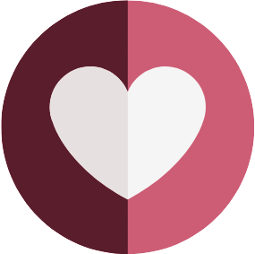

<body>
  <!-- LOADER -->
  <section class="loader">
    <div class="container-img">
      <div class="img">
        
      </div>
      <div class="img">
        
      </div>
    </div>
    <div class="container-text">
      <p>Loading ... <span class="counter">0</span>%</p>
    </div>
    <div class="loading-bar">
      <div class="progress-bar"></div>
    </div>
  </section>

  <div class="gradient-bg">
    <svg xmlns="http://www.w3.org/2000/svg">
      <defs>
        <filter id="blur1">
          <feGaussianBlur stdDeviation="10" result="blur" />
          <feColorMatrix in="blur" mode="matrix" values="1 0 0 0 0  0 1 0 0 0  0 0 1 0 0  0 0 0 18 -8" result="blur1" />
          <feBlend in="SourceGraphic" in2="blur1" />
        </filter>
      </defs>
    </svg>
    <div class="gradient-container">
      <div class="g1"></div>
      <div class="g2"></div>
      <div class="g3"></div>
      <div class="g4"></div>
      <div class="interactive"></div>
    </div>
  </div>

  <section class="first-sct">
    <div class="hero-sct">
      <div class="loveline-logo">
        
      </div>

      <div class="mini-nav">
        <div class="theme-button" id="theme-button">
          <!-- SVG FOR DARK MODE -->
          <svg id="icon-moon" xmlns="http://www.w3.org/2000/svg" fill="none" viewBox="0 0 24 24" stroke-width="1.5"
            stroke="currentColor" class="size-6">
            <path stroke-linecap="round" stroke-linejoin="round"
              d="M21.752 15.002A9.72 9.72 0 0 1 18 15.75c-5.385 0-9.75-4.365-9.75-9.75 0-1.33.266-2.597.748-3.752A9.753 9.753 0 0 0 3 11.25C3 16.635 7.365 21 12.75 21a9.753 9.753 0 0 0 9.002-5.998Z" />
          </svg>

          <!-- SVG FOR LIGHT MODE-->
          <svg id="icon-sun" xmlns="http://www.w3.org/2000/svg" fill="none" viewBox="0 0 24 24" stroke-width="1.5"
            stroke="currentColor" class="size-6" style="display: none;">
            <path stroke-linecap="round" stroke-linejoin="round"
              d="M12 3v2.25m6.364.386-1.591 1.591M21 12h-2.25m-.386 6.364-1.591-1.591M12 18.75V21m-4.773-4.227-1.591 1.591M5.25 12H3m4.227-4.773L5.636 5.636M15.75 12a3.75 3.75 0 1 1-7.5 0 3.75 3.75 0 0 1 7.5 0Z" />
          </svg>
        </div>
        <div class="cta-login-button">
          <a> LOGIN </a>
        </div>
      </div>

    </div>

    <div class="hero-items">

      <div class="title-hero-sct">
        <h1> <span class="word">―</span><span class="word">TRACK</span><br>
          <span class="word">YOUR</span><span class="word">&nbsp;LOVE</span> <br>
          <span class="word">STORY</span>
        </h1>
        <p>Capture and cherish your precious <span> memories together.</span></p>
      </div>

      <div class="side-menu">
        <a>Menu <svg xmlns="http://www.w3.org/2000/svg" fill="none" viewBox="0 0 24 24" stroke-width="1.5"
            stroke="currentColor" class="size-6">
            <path stroke-linecap="round" stroke-linejoin="round" d="M3.75 9h16.5m-16.5 6.75h16.5" />
          </svg>
        </a>
        <a>About us <svg xmlns="http://www.w3.org/2000/svg" fill="none" viewBox="0 0 24 24" stroke-width="1.5"
            stroke="currentColor" class="size-6">
            <path stroke-linecap="round" stroke-linejoin="round"
              d="m11.25 11.25.041-.02a.75.75 0 0 1 1.063.852l-.708 2.836a.75.75 0 0 0 1.063.853l.041-.021M21 12a9 9 0 1 1-18 0 9 9 0 0 1 18 0Zm-9-3.75h.008v.008H12V8.25Z" />
          </svg>
        </a>
        <a>How it works <svg xmlns="http://www.w3.org/2000/svg" fill="none" viewBox="0 0 24 24" stroke-width="1.5"
            stroke="currentColor" class="size-6">
            <path stroke-linecap="round" stroke-linejoin="round"
              d="M21 8.25c0-2.485-2.099-4.5-4.688-4.5-1.935 0-3.597 1.126-4.312 2.733-.715-1.607-2.377-2.733-4.313-2.733C5.1 3.75 3 5.765 3 8.25c0 7.22 9 12 9 12s9-4.78 9-12Z" />
          </svg>
        </a>
        <a>Sign up <svg xmlns="http://www.w3.org/2000/svg" fill="none" viewBox="0 0 24 24" stroke-width="1.5"
            stroke="currentColor" class="size-6">
            <path stroke-linecap="round" stroke-linejoin="round" d="M12 4.5v15m7.5-7.5h-15" />
          </svg>
        </a>
      </div>
    </div>
  </section>


  <section class="second-sct">
    <div class="second-sct-bg">

    </div>
  </section>

  <section class="third-sct">
    
  </section>
</body>